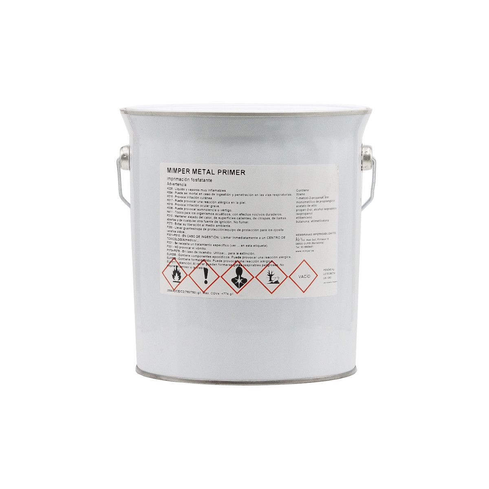
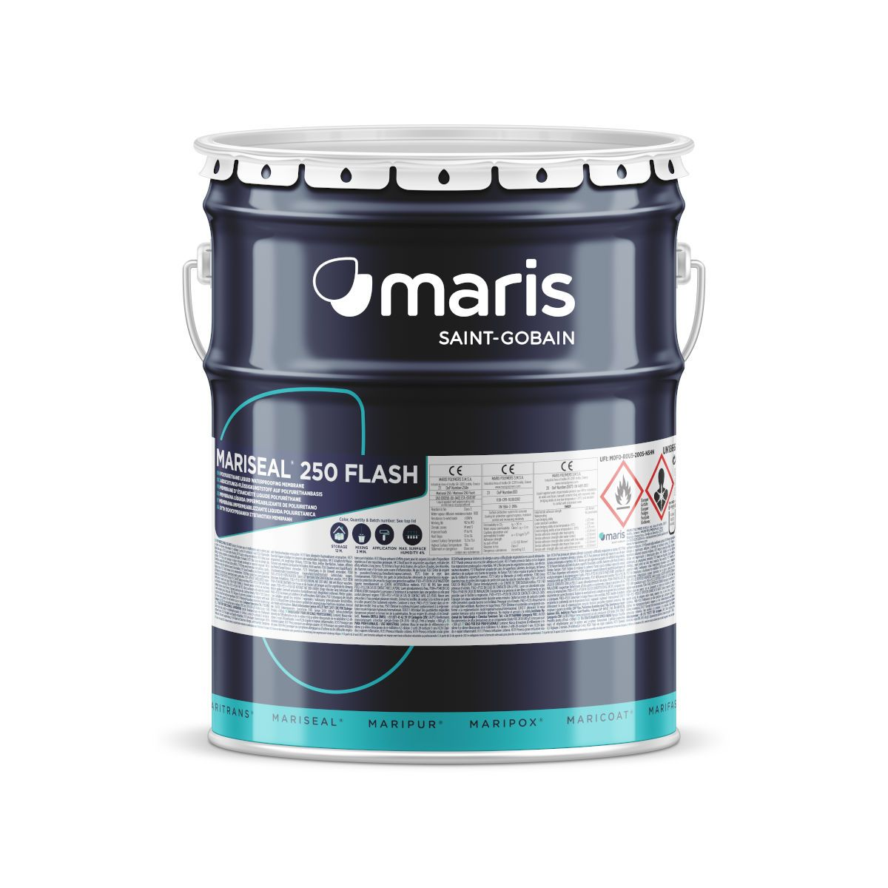
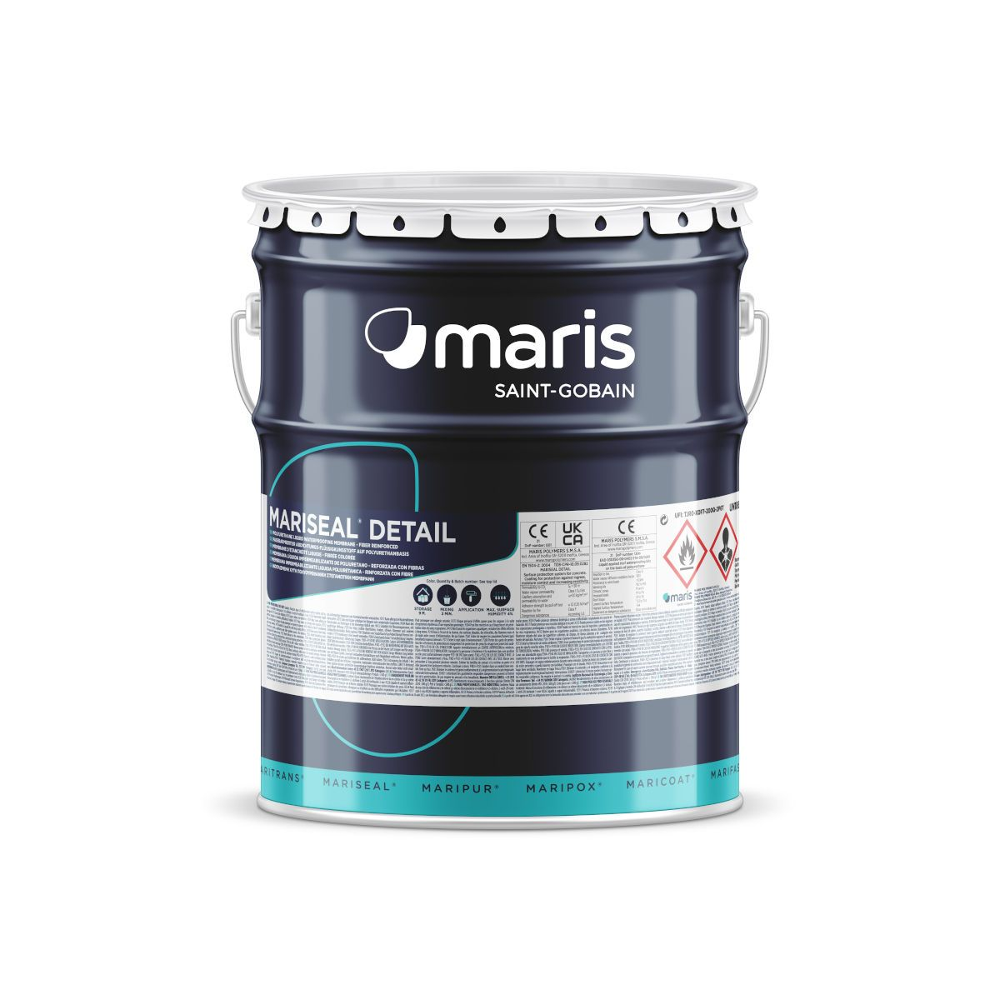
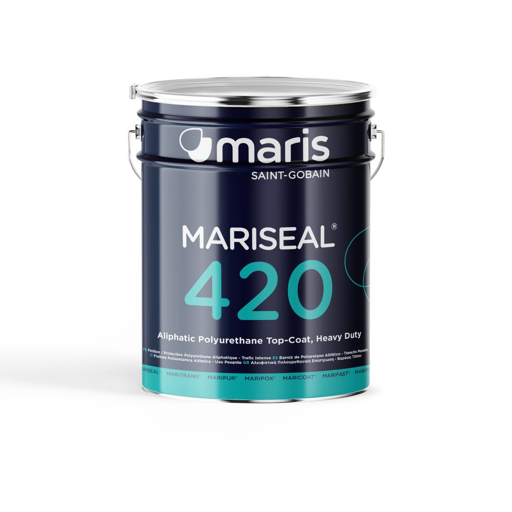
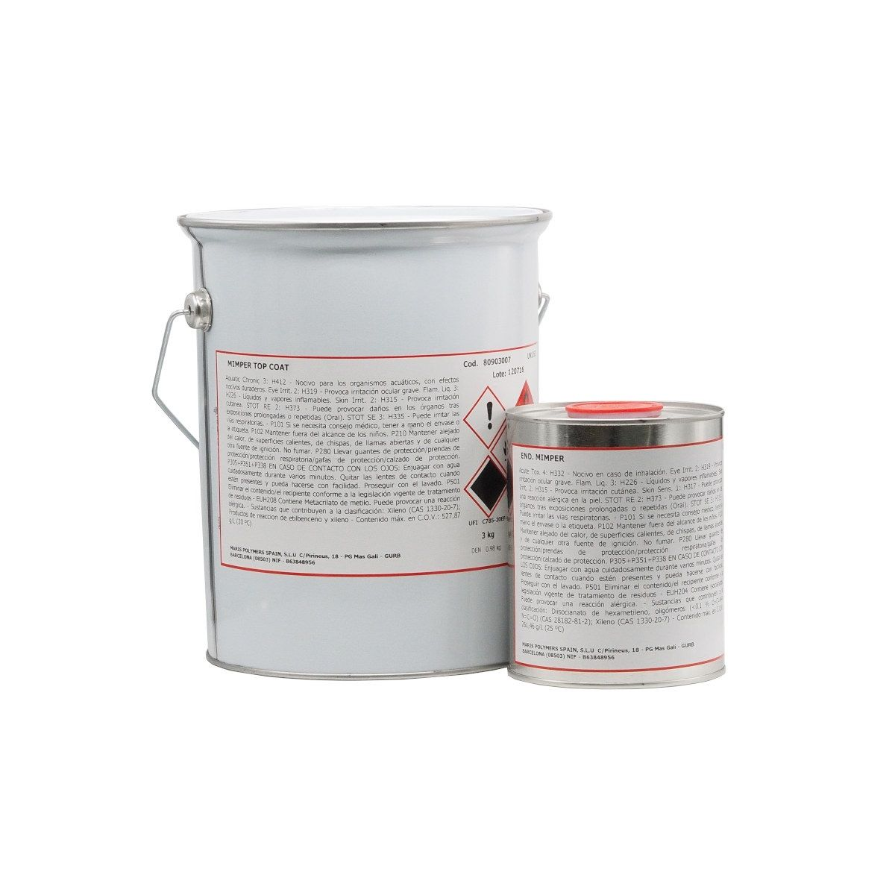
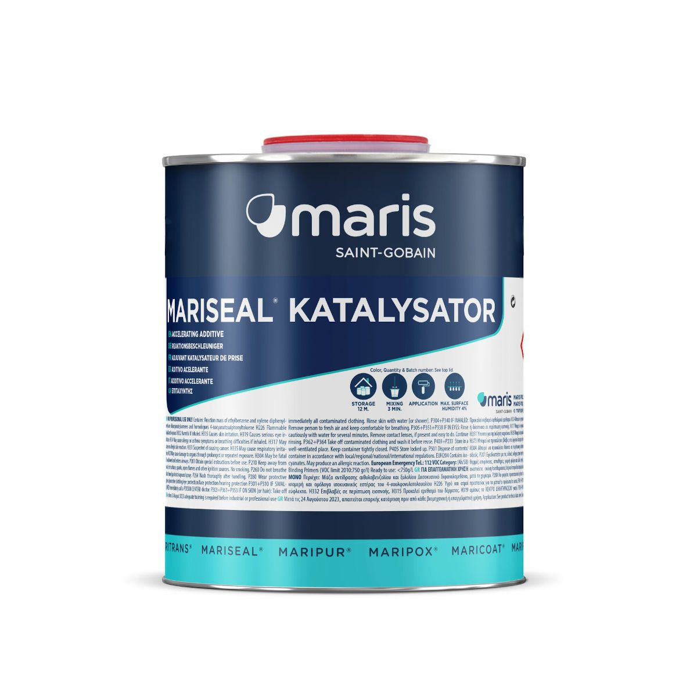
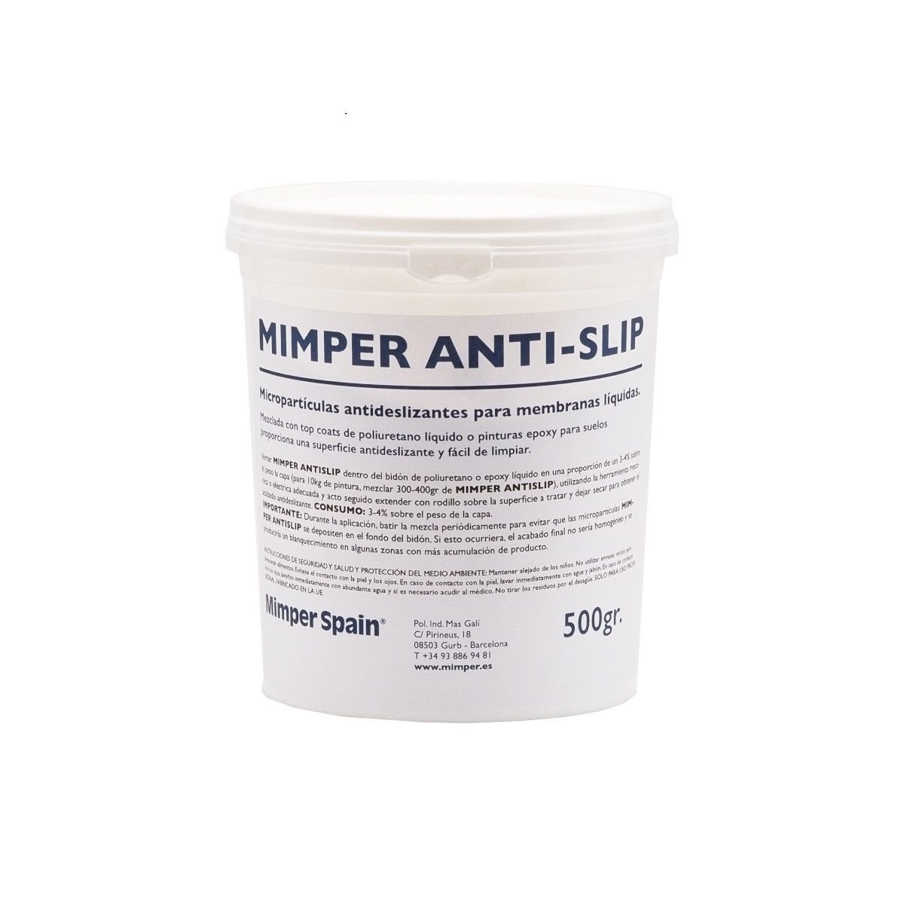
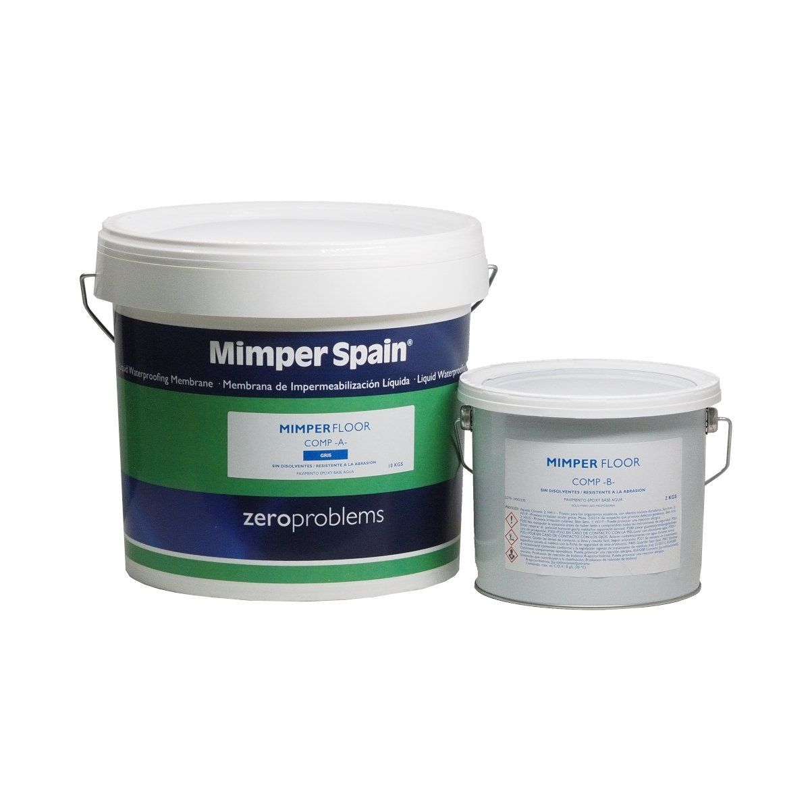
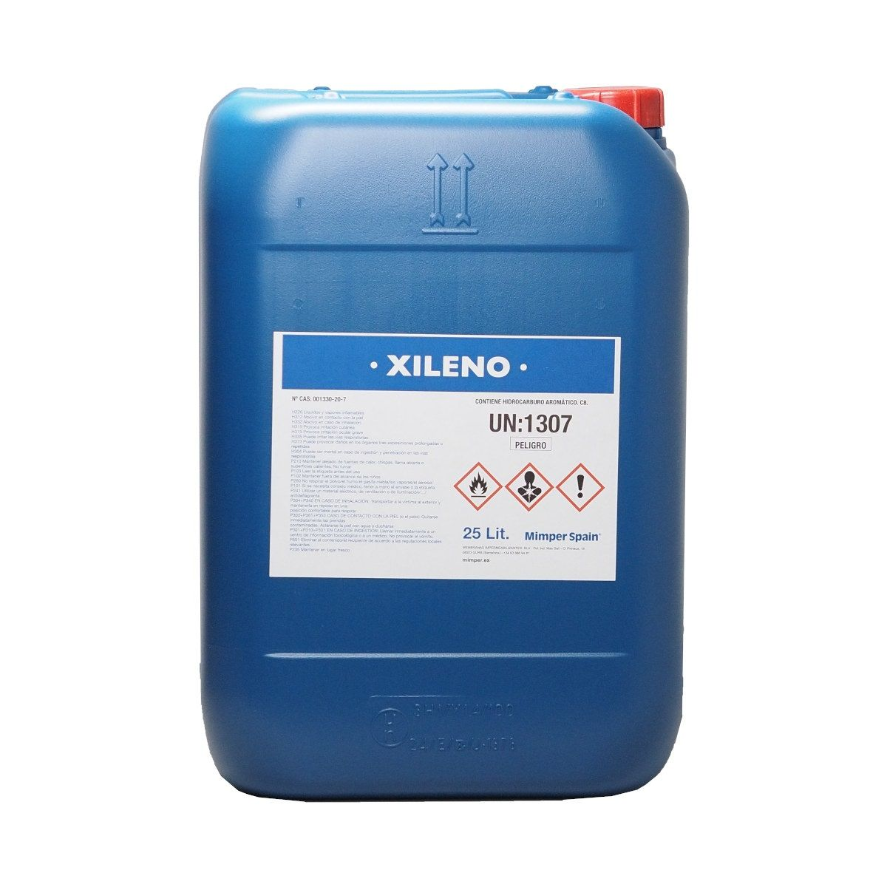

Imprimaciones y masillas
M.E.K.
Metil Etil Acetona para limpieza y activación de superficies de PVC y EPDM.
Catálogo
30 productos para sistemas de impermeabilización líquida: imprimaciones, membranas, refuerzos, acabados y auxiliares. Filtra por familia, uso o sistema.
30 productos
Imprimaciones y masillas
Metil Etil Acetona para limpieza y activación de superficies de PVC y EPDM.

Imprimaciones y masillas
Masilla de poliuretano tixotrópica, de elasticidad permanente, de aplicación y secado en frío, utilizada para el calafateo y el sellado d…

Imprimaciones y masillas
Imprimación de poliuretano transparente, monocomponente, de alta penetración base disolvente. Se utiliza sobre superficies absorbentes.

Imprimaciones y masillas
Imprimación de poliuretano transparente, semirígida, de alta penetración, monocomponente, base agua y de secado rápido. Se utiliza sobre…

Imprimaciones y masillas
Imprimación epoxi transparente, bicomponente, rígida y sin solventes. Se utiliza en aplicaciones de impermeabilización exigentes.

Imprimaciones y masillas
Imprimación epoxi transparente, bicomponente y base de agua. Se utiliza como imprimación universal sobre superficies absorbentes y no abs…
Imprimaciones y masillas
Promotor adhesivo a base de solvente, transparente y monocomponente. Activa químicamente las superficies de cerámica y vidrio proporciona…

Imprimaciones y masillas
Imprimación vinílica fosfatante para superficies de acero, acero galvanizado y/o aleaciones ligeras.

Impermeabilizantes
Membrana de poliuretano monocomponente de aplicación líquida, altamente elástica, de aplicación y secado en frío usada para la impermeabi…

Impermeabilizantes
Membrana de poliuretano monocomponente, semitrixotòpica de aplicación líquida idónea para superficies inclinadas o verticales.

Impermeabilizantes
Membrana de poliuretano monocomponente, de aplicación líquida base agua. Basada en la innovadora tecnología PUD Technology. ETA 21/0249.

Impermeabilizantes
Membrana híbrida de poliuretano base agua, monocomponente, de aplicación líquida, utilizada para aplicaciones en zonas húmedas bajo baldo…

Impermeabilizantes
Membrana modificada de poliuretano monocomponente, de aplicación líquida base agua. Basada en la innovadora tecnología PUD Technology.

Impermeabilizantes
Membrana impermeabilizante de poliuretano bicomponente, sin solventes, de aplicación líquida para la protección de depósitos de agua y em…

Impermeabilizantes
Membrana de poliuretano bicomponente, semirígido, sin solventes para una impermeabilización duradera.

Impermeabilizantes
Membrana de poliuretano monocomponente, permanentemente elástica, estable ante las radiaciones ultravioletas para la impermeabilización d…

Impermeabilizantes
Poliurea híbrida bicomponente de aplicación en frío para una impermeabilización y protección duraderas.

Impermeabilizantes
Membrana de poliuretano monocomponente, de aplicación líquida tixotrópica, reforzada con fibras para detalles complejos y juntas en cubie…
Impermeabilizantes
Recubrimiento de poliuretano monocomponente, transparente, estable ante las radiaciones ultravioletas que no amarillea para aplicaciones…

Armaduras de vellón
Geotextil no tejido de poliéster, utilizado principalmente como tejido de refuerzo en combinación con las membranas impermeabilizantes de…

Top Coats
Capa superior de poliuretano alifático, estable ante las radiaciones ultravioletas que prolonga la vida útil de la membrana impermeabiliz…

Top Coats
Capa superior de poliuretano alifático, monocomponente, base agua, estable ante las radiaciones ultravioletas, aplicada sobre membranas i…

Top Coats
Capa superior de poliuretano alifático, estable ante las radiaciones ultravioletas que prolonga la vida útil de la membrana impermeabiliz…
Top Coats
Recubrimiento de poliuretano monocomponente, transparente, alifático utilizado sobre MARITRANS®, proporcionando a la superficie un acabad…

Top Coats
Barniz de poliuretano bicomponente acabado a base de una resina acrílica hidroxilada y un polisocianato alifático apto para piscinas. Bas…

Otros productos
Arena de sílice (0,4-0,9mm) cantera francesa que aplicada junto a las membranas MARISEAL® aumentan su dureza y antideslizamiento.

Otros productos
Aditivo acelerante para ser usado con las membranas impermeabilizantes de poliuretano de aplicación líquida MARISEAL® 250, 260 y 270.

Otros productos
Micropartículas antideslizantes para la membrana MARITRANS® MD y para los Top Coats MARISEAL® 400, Mariseal® 400W y Mimper Top Coat.

Otros productos
Pintura epoxy bicomponente base agua para pavimentos y paredes interiores. Aplicable en multitud de industrias, resiste múltiples químico…

Otros productos
Diluyente y agente de limpieza para las membranas solventes MARISEAL®, 100% xileno.
No hay productos con esos filtros.
Prueba con otro término o pregunta a nuestro equipo técnico.